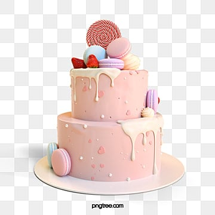
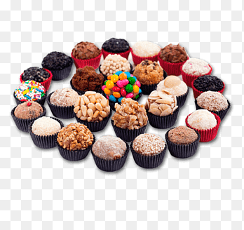
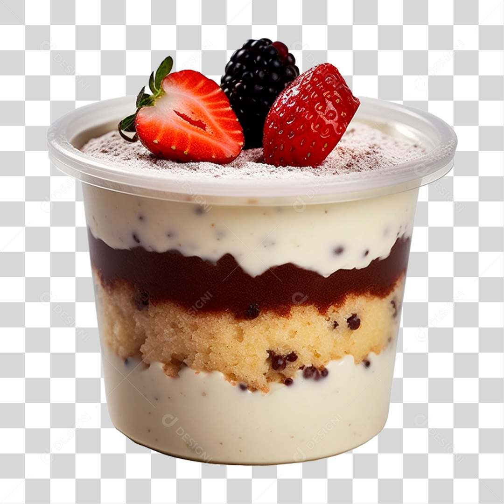

alguns dos Meus projetos

bolos de 2 andares doces personalizados
meus bolos são trabalhados na estetica e sabor ,todo os meus bolos são bem trabalhados nos recheios e glasagem todas as massas são do sabor de sua preferencia bem macias e umidecidas com agua e açucar

doces personalizados
os doces personalizados são de acordo com o tema ou o pedido do cliente , como os bolos tem de varios sabores um dos mais pedidos é de leite em pó recheado com creme de avelã carimbados com desenhos de acorrdo com o gosto do cliemte

bolos de pote
os bolos de pote são feito com masa de chocolate e recheados com brigadeiro de coco ou morango